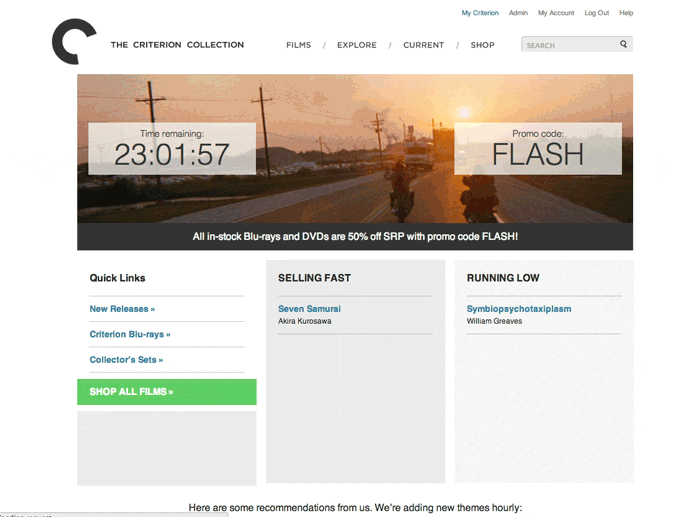
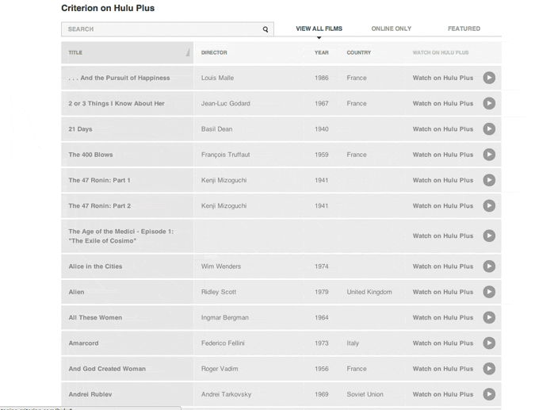
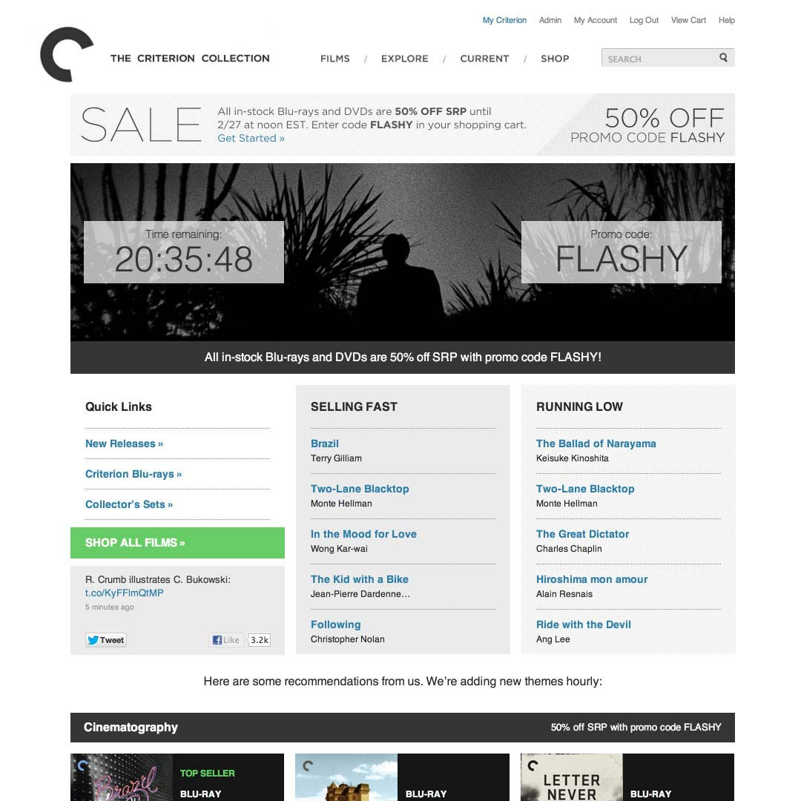
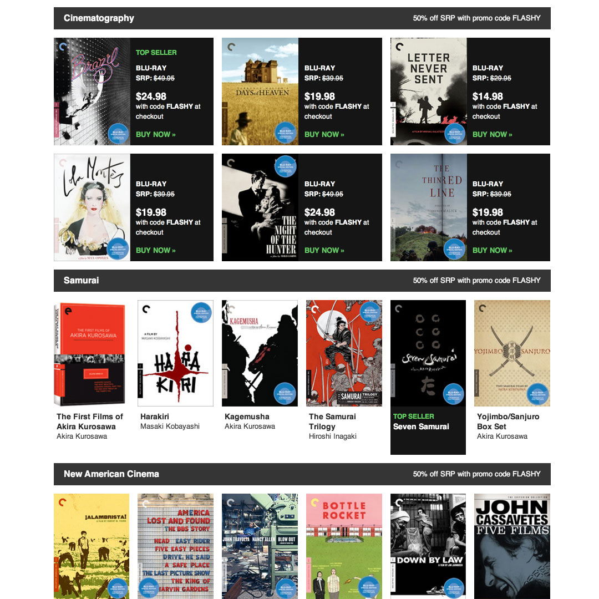
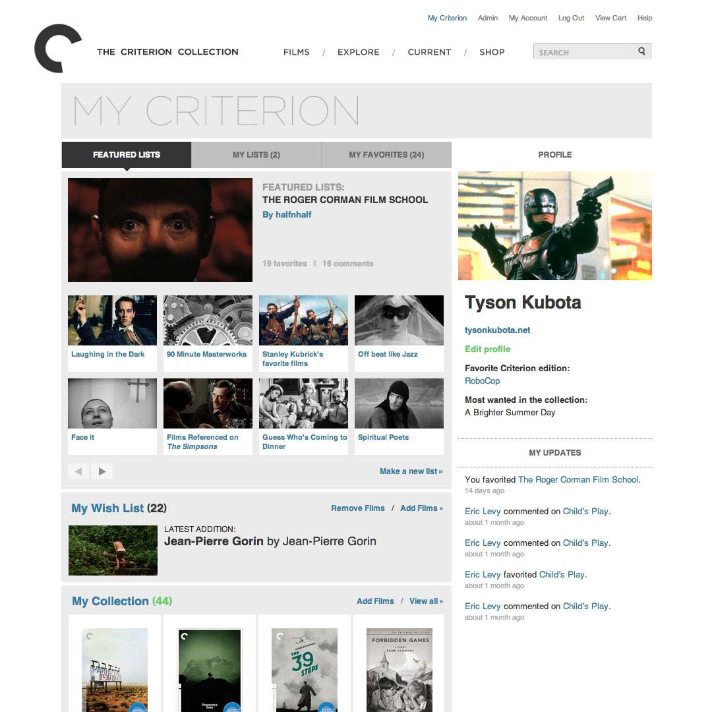
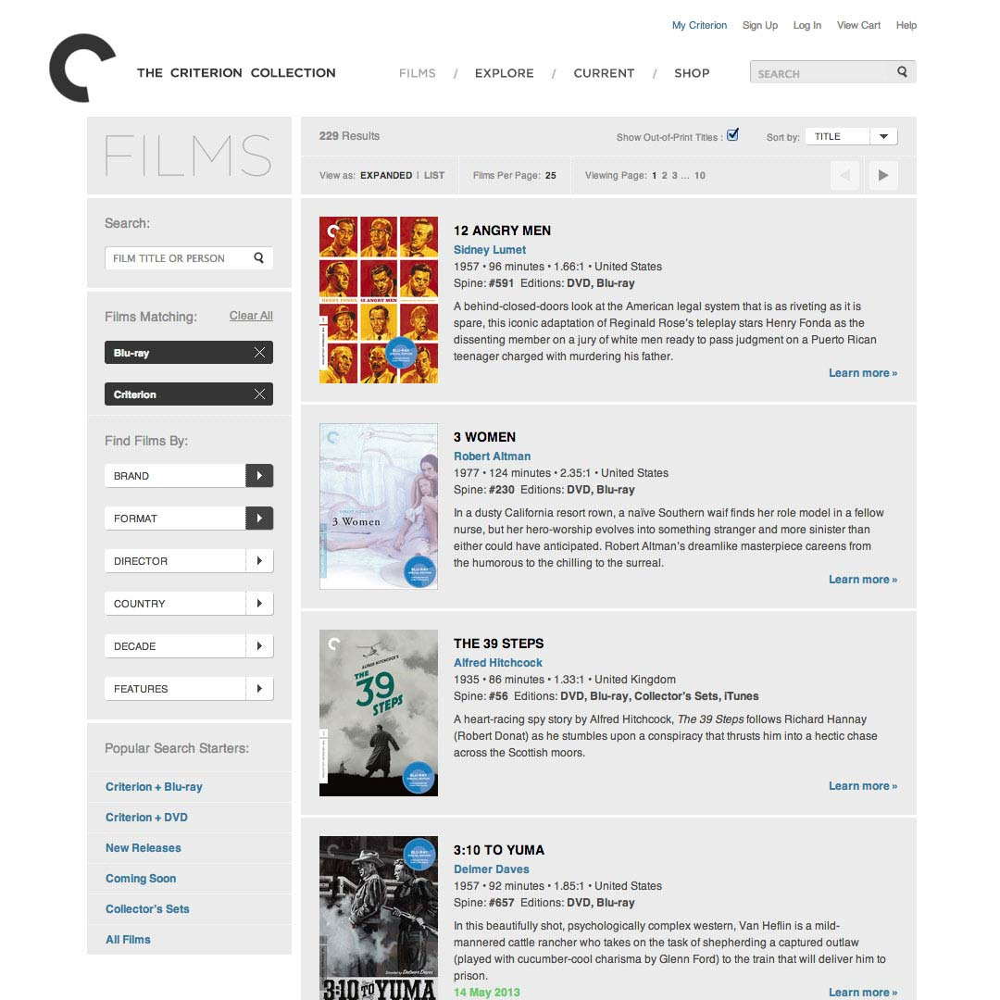
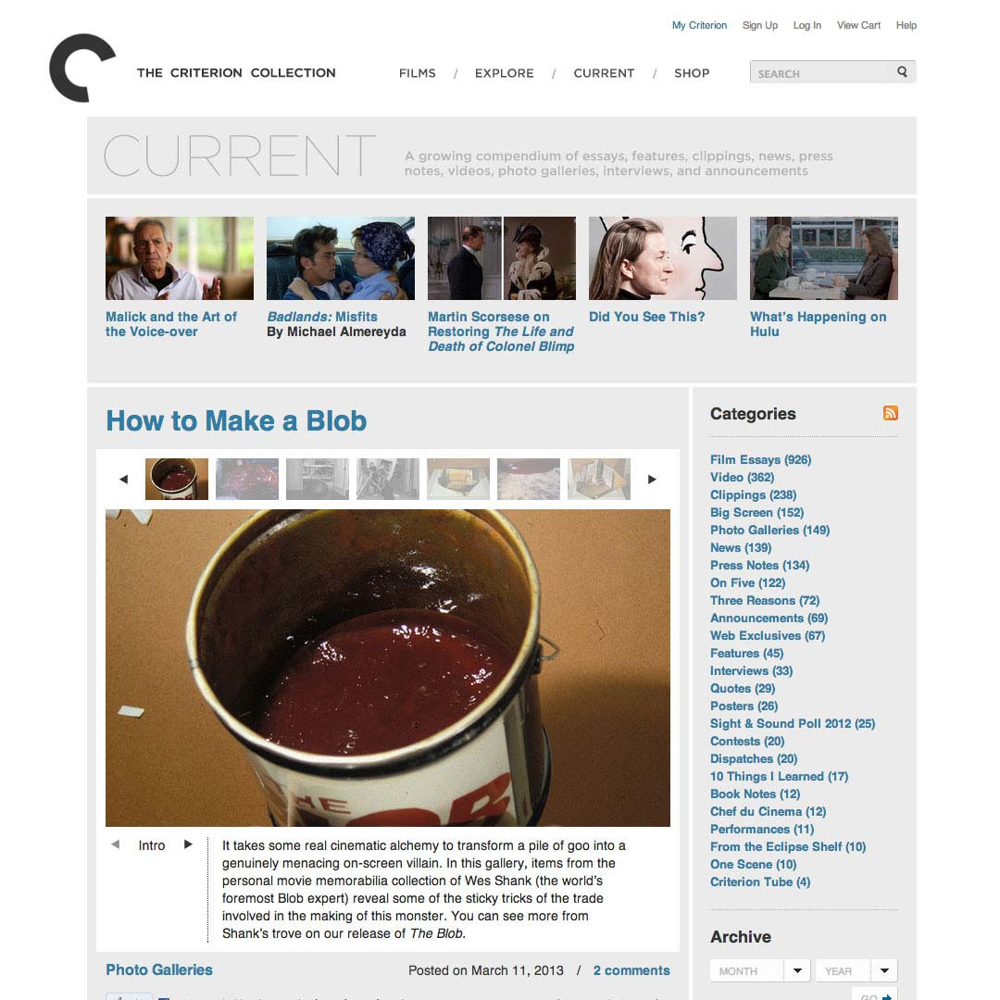
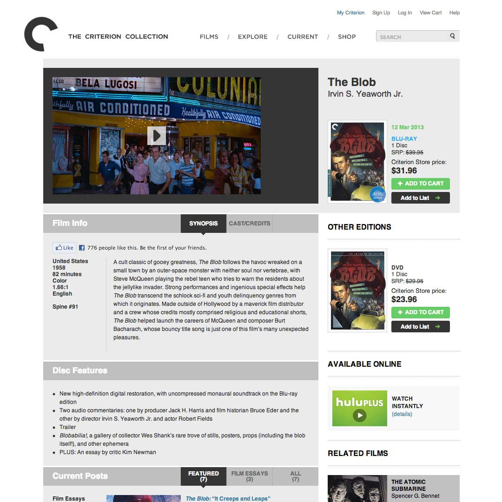

Portfolio
I love creating clean, fast, focused digital experiences. Get in touch »
I’ve worked at the Criterion Collection since 2007, and on Criterion.com actively since 2008.
As part of a small team, I have led Criterion's online marketing and development roadmap, with specific focus on content strategy, interaction design and user experience.
Below are some projects and my contributions:
- 
I conceptualized, prototyped, and directed the development of this 2013 sale dashboard. Our goal for this page was to show informational feeds in a way that would convey a sense of movement and immediacy, as products faded in and out of the panels.
- 
This browser lets users browse, search, and quickly start watching the Criterion films streaming on Hulu Plus.
- 
The sale dashboard’s user interface was constructed clientside with Handlebars and Backbone.js.
- 
The lower half of the page contained curated shelves of films, with animated real-time stock and popularity indicators to guide users’ purchasing decisions.
- 
My Criterion is a social layer where users can track their Blu-ray/DVD collections and create custom lists of films. I wrote its initial feature set and led its interaction design, and revamped the profile pages in October 2012, adding an updates feed and emphasizing a carousel of user-made lists.
- 
This product browser lets you find films by director, country, year, and more. I defined its search experience and assisted with interaction design.
- 
I set specs, polished design, and led frontend development on this photo gallery tool.
- 
We've evolved the Criterion film pages from promoting a single physical product to a richer media experience with articles, videos, photos and more. I led a recent interface redesign, adding tabbed navigation and feeds of social elements.
The official US site for the sci-fi epic Snowpiercer, directed by Bong Joon Ho. It’s powered by Tumblr for easy updating, and uses Isotope.js for sorting tiles of Built for Radius/The Weinstein Company.
Still Moving: Pilobolus at Forty
I designed and built this Tumblr-powered site for a dance documentary by Jeffrey Ruoff.

“Road Eats” concept
Desperate for food on a rural drive, I had an idea for a web app that would quickly show the best eating options along a transit route.
A 3D tilt game I created for iOS using Unity, released in January 2014. It’s been a crash course in game design and 3D modeling—what a great learning experience!

{kind=link}
{kind=link}
{kind=link}
{kind=link}
{kind=link}
{kind=link}
{kind=link}
{kind=link}
{kind=link}
{kind=link}
{kind=link}
{kind=link}
{kind=link}
{kind=link}
{kind=link}
{kind=link}
{kind=link}
{kind=link}
{kind=link}
Other Experiences
Offline and analog adventures.
I've written since 2009 for the film journal Reverse Shot. Some of my pieces:
Saw / The Swan (2014)
Les Misérables (2012)
The Twilight Saga: Breaking Dawn, Part 2 (2012)
9 (2009)
Telluride Film Festival
I have worked for the Telluride Film Festival since 2006. I've volunteered at seven installments of the festival so far, and screened and critiqued hundreds of short films for two summers.
Dartmouth Film Society
I was director of the Dartmouth Film Society, one of the oldest college film societies in the U.S., from 2006-2007. I crafted over 200 film programs a year (at the time, more than 90% on 35mm), led meetings, edited original essays, and wrote advertising copy.
Montage: The Dartmouth Film Journal
I designed all covers and contents of the printed campus film journal, in addition to writing and editing original articles.
Open Shores
{kind=link}